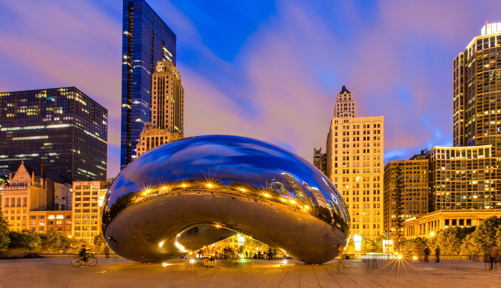
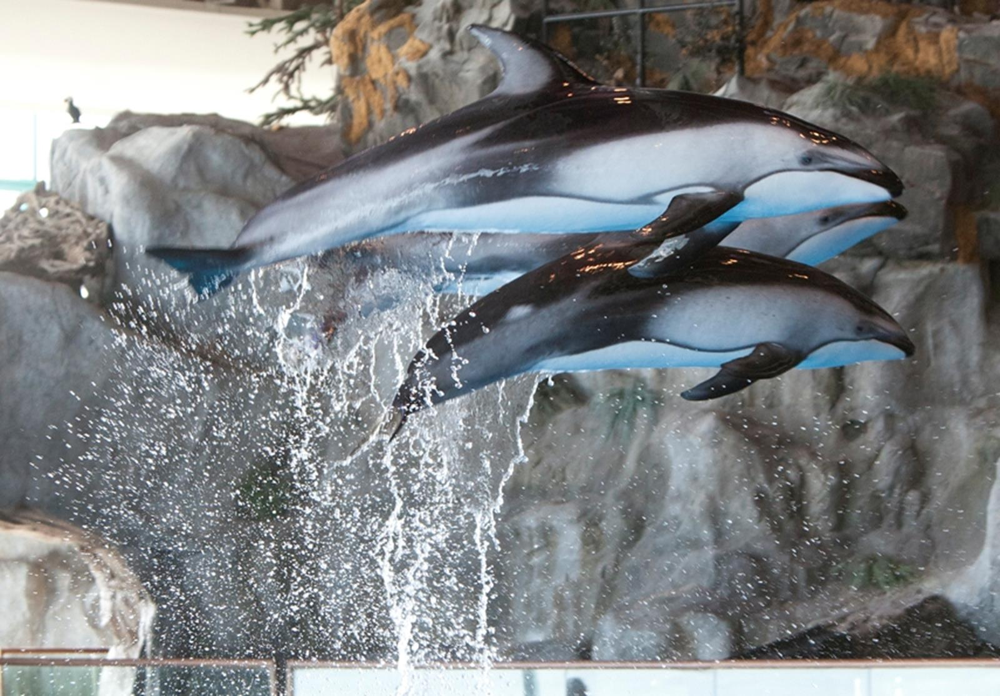
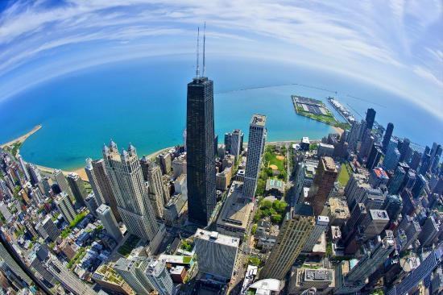

Millenium Park
With 25 acres of Awe-Inspiring Landscape, breathtaking architecture and an iconic collection
of public art, Millennium Park is Chicago's premier green space.
Millennium Park sits on space that was previously occupied by rail yards and parking lots.
Through a massive civic effort, generous private donations and six years of tireless work,
the Park ceremoniously opened on July 16, 2004.
Today, 25-acre Millennium Park is the second most popular tourist attraction in
Illinois (following close on the heels of Navy Pier), and contains some of the
greatest public art pieces in the world.
Shedd Aquarium

Shedd Aquarium was the first inland aquarium with a permanent saltwater fish collection.
Located on Lake Michigan, it is located on the Museum Campus Chicago, which it shares
with the Adler Planetarium and the Field Museum of Natural History. It was the most visited
aquarium in the U.S. in 2005, and in 2007, it surpassed the Field Museum as the most
popular cultural attraction in Chicago. The aquarium contains 1,500 species, including fish,
marine mammals, birds, snakes, amphibians, and insects.
The wild reef exhibited at the Shedd Aquarium.
In 2003 Shedd opened Wild Reef, a permanent exhibit located two levels below the main
building. The exhibit contains a total of 525,000 US gallons (1,990,000 l) and
recreates a Philippine coral reef on the Apo Island marine reserve,
complete with living coral, multiple species of fish and rays.

360 degree Chicago
360 CHICAGO observation deck, located 1000 feet above the famed Magnificent Mile in the
iconic John Hancock Building, offers breathtaking 360 degrees views of the city skyline
and Lake Michigan. 360 Chicago observation deck is also home of TILT – Chicago’s highest
thrill ride – an enclosed moving platform that literally tilts you out over Michigan
Avenue from the 94th Floor. With its many interactive learning opportunities on the
city’s rich history, colorful neighborhoods and its iconic architecture, along with a
modern Bar and Café where you can relax and enjoy the best views of the city, 360
CHICAGO is the perfect place to enjoy an unforgettable experience.